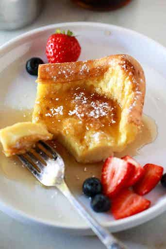

German Pancakes

Description
The absolute best German Pancakes recipe! Only six simple ingredients and five minutes to prepare, this easy breakfast is a sure family favorite!
German pancakes, often called Dutch Baby pancakes are baked pancakes made from eggs, milk, flour and vanilla. The pancakes are baked in a metal or cast iron pan, puff up in the oven and then fall as they cool.
Ingredients
- 6 large eggs
- 1 cup milk
- 1 cup all-purpose flour
- dash salt
- 1 teaspoon vanilla extract
- 5 Tablespoons butter
Instructions
- Preheat oven to 425 degrees F.
- As oven preheats, put the butter in an un-greased 9x13-in. baking dish and place in oven, just until melted.
- Place the eggs, milk, flour, salt and vanilla in a blender; cover and process until smooth. Pour batter into baking dish, over melted butter.
- Bake, for 22-27 minutes or until edges are golden brown and puffy.
- To serve, sprinkle generously with powdered sugar and syrup.
Back to Recipes